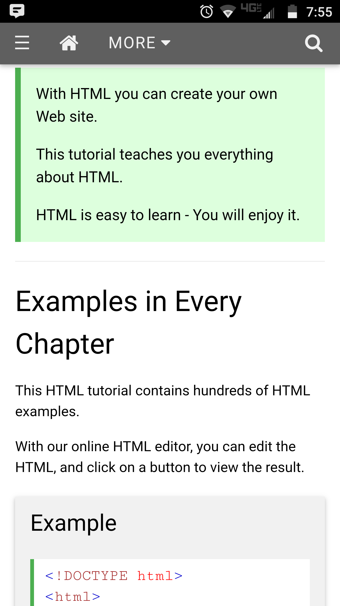

Design Principles in Mobile Sites
Proximity — Kelton Barr

I-Learn (byui.brightspace.com)
This webpage represents proximity because as you can see things are in their own areas and closer to things that they relate to. They are all in a good proximity to each other but separated enough that you can see the different sections.
Alignment — Kelton Barr

mlb.com
This webpage shows good alignment because as you can see there are many different articles and pictures and videos that you can select and they are lined up to be easily accessible but close enough that you can see a lot on the screen at the same time. Things are lined up to be easily read and viewed.
Repetition — Brian Newhouse

IGN.com
This shows an example of repetition. All the black bars all with an article and they say READ to the right of it. It's the same thing over and over.
Contrast — Joel Jossie
w3schools.com
Contrast is used in this image as a way of distinguishing different kinds of information on the page. The area in green is a special note, whereas the normal text is simply the content of the chapter. Additionally, the card-style area represents an interactive example module for learing HTML and such. This shows contrast because there are clear style differences between the different elements, yet the whole page maintains design consistency.
Typography — Alex Tangen

kali.org
This site uses a lot of different techniques with typography. The important things are bolded, links are blue, and requirements are red, helping the user see what they need to install for the Kali operating system on your mobile device. The site uses all one font, making things pretty straightforward, though it lacks much creativity. The user would be a security expert/hacker, so when it come down to it, only the info would be needed.